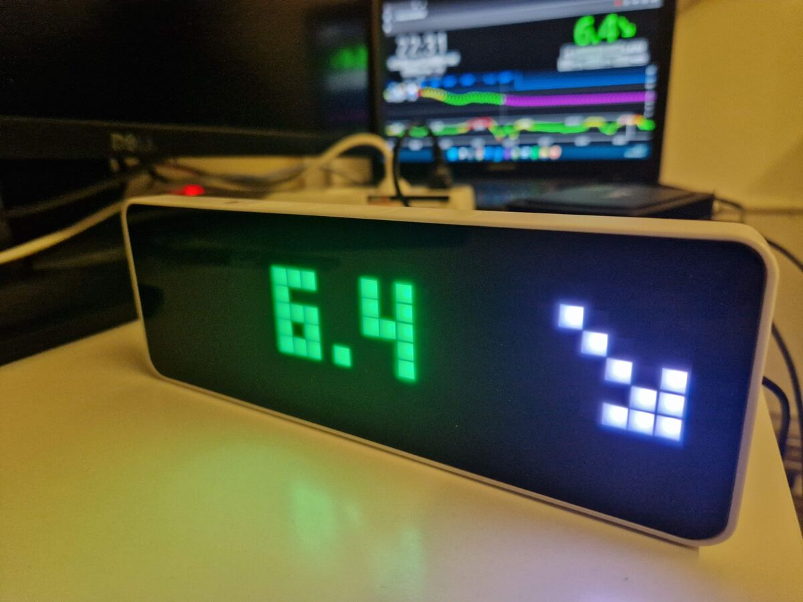

Free, open-source firmware
Glucose you can read from across the room
Nightscout Clock turns the Ulanzi TC001, a pixel clock that costs about $50, into a glucose display with alarms. It gets every new reading from your CGM's cloud service over Wi-Fi, so you can see it without picking up your phone, and there is no subscription.
Works with Dexcom Share, Nightscout, LibreLinkUp and Medtrum EasyFollow, in mg/dL or mmol/L.
Live: the clock's own display code, running in your browser with a sample reading.

What it does
Made for the people who keep watch
Nightscout Clock was made for families and caregivers of people with type 1 diabetes, so they can see the current glucose at a glance, day and night, without unlocking a phone.
Big, bright and clear
The value, its trend arrow and how old it is, on a bright LED display. Sixteen faces, from large digits and a three-hour graph to a unicorn, a dragon and a race car.
Alarms you can hear
Low, high and urgent-low alarms with their own limits, sounds and snooze times, and alert windows for the hours and weekdays they should sound.
Straight from the source
The clock signs in to Dexcom Share, Nightscout, LibreLinkUp or Medtrum EasyFollow itself. There is no server in between: your readings and passwords go only to your data source.
Old data never looks new
Age bars show how many minutes old the reading is. When the data gets too old, the value takes a color you choose and the trend arrow becomes a cross.
Fits the bedroom
Brightness follows the room's light, dark-room faces stay readable without lighting up the room, and a daily schedule changes the face and brightness for the night.
Set up from your phone
The clock opens its own Wi-Fi network for setup. Its settings page works offline, previews every change live, and backs up your settings to a file.
The hardware
An inexpensive pixel clock, put to better use
The Ulanzi TC001 is a smart pixel clock with a 32 × 8 LED display, three buttons, a light sensor and a buzzer. Nightscout Clock replaces its firmware. You don't need a hub, an app or an account with this project.
It costs about $50 and is sold by Ulanzi in the US and Europe, and on AliExpress.
The Ulanzi link is an affiliate link.
Get started
Install it in about ten minutes
You install the firmware from this page over USB, then finish the setup on your phone.
-
Turn on the clock
Hold its
<and>buttons for three seconds, then connect it to your computer with the USB-C cable that came with it. -
Install the firmware
Press Connect and install below, choose the clock's port and follow the instructions. It takes a minute or two.
-
Set it up
On your phone, join the
nsclockWi-Fi network and openhttp://192.168.4.1. Enter your Wi-Fi details, your data source and your glucose limits.
Connect the clock, then install
Nightscout Clock firmware
You will need
- Chrome or Edge on a Windows, macOS, Linux or ChromeOS computer
- The clock's USB-C cable, or another cable that carries data
- Your Wi-Fi name and password, and the sign-in for your data source
Updating? Installing replaces everything on the clock, including its settings. Before you update, download a settings backup on the WiFi & system tab of the clock's settings page. After the update, load it on the same tab, check the settings and select Save and restart.
Something not working? The troubleshooting guide covers installation, Wi-Fi and data problems. To send logs with a bug report, install the debug firmware.
Help and community
Questions, ideas and updates
Nightscout Clock is a community project. New versions come out every few weeks.
Troubleshooting guide
Installation, Wi-Fi, data sources and restarts, step by step.
Discussions
Ask a question, share your setup or suggest a feature.
Report a problem
Open an issue with what happened and, if you can, the clock's logs.
What's new
The changes in every version, from the latest release back.
Video review
A video review of the clock by CallumMcK, on YouTube.
Source code
The firmware, the settings page and this site, on GitHub. Contributions are welcome.